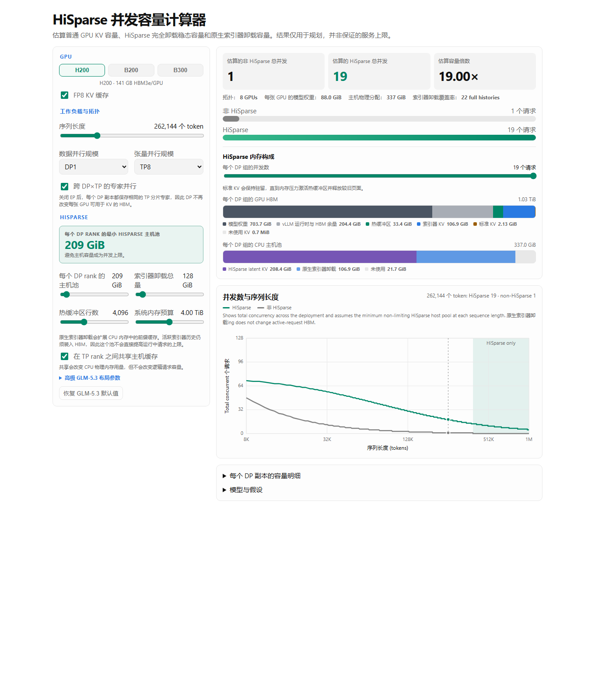

要点速览： vLLM 一直致力于让推理服务更快、成本更低。在这组分为上下两篇的文章中，我们介绍为 GLM-5.3 加入的新优化。第一部分展示了混合 HiSparse（Hybrid HiSparse）如何帮助在单个 8× H200 节点上运行聚合式部署；对于如此规模的模型，这一硬件配置的内存非常紧张。混合 HiSparse 让 GLM-5.3 可以在该硬件上运行此前无法实现的完整 100 万 token 上下文，并在不同上下文长度下实现显著更高的并发度。
在需要时利用稀疏性
智能体工作负载通常包含大量并发请求，每个请求都有很长且持续增长的上下文。GPU 块池的大小是固定的，因此 KV 缓存最终会没有空间为并发请求分配新块。
此前主要有两种处理方式，各有取舍：
- **抢占（Preemption）**会选中一个请求，丢弃它的 KV 缓存，之后重新进行预填充。每次被逐出后，该请求都要重新承担完整的首 token 时间（TTFT）。
- **卸载（Offloading）**会把块移到主机内存，但稠密注意力要求全部 token 都驻留在 GPU 上，所以并发请求数仍受 GPU 内存限制。
对于稀疏 MLA 的 KV 缓存，索引器会选出 top-K token，注意力只访问这些 token。HiSparse利用了这一行为：除被选中的 token 外，其余 KV 缓存全部卸载到 CPU，从而为每个请求所需的 GPU 内存提供一个有效上限。索引器 KV 仍驻留在 GPU 上，并随上下文长度增长，但其总体体积小得多；而且 GLM-5.3 的 IndexShare 让每四个稀疏 MLA 层只需要一个索引器层。
本文提出的混合 HiSparse会在容量充足时继续把 KV 缓存在 GPU 上，只有当 KV 缓存承受压力时，才启用上述 HiSparse 卸载机制。热缓冲区页面按 token 建立索引，因此一个页面可以容纳来自许多不同 CPU 块的 token，从而覆盖跨度很大的上下文。这样一来，混合 HiSparse 只在系统真正面临 KV 缓存压力时，也就是并发度较高时，才支付 CPU–GPU 内存传输成本。
抢占：释放请求 B 的槽位，并丢失其 KV。普通卸载：B 的 KV 保留在主机内存中，无需重新预填充，但在全部 KV 再次装入 GPU 前，B 仍不能继续运行，因此只有 A 在解码。混合稀疏卸载：每个请求就地释放最冷的页面，同一批槽位重新租给新的尾部页面和热页面，因此两个请求都能继续解码。
只有混合 HiSparse 能让两个请求都持续解码。热页面与 KV 页面从同一个块池中租用；更关键的是，它们位于同一个 KV 缓存张量中，因此对稀疏 MLA 内核而言就像普通页面。混合稀疏模式允许一部分 token 位于热缓冲区，同时另一部分 token 仍位于 GPU 驻留页面，从而减少从 CPU 重新载入的数据量。
工作原理
每个面板中圈出的都是相同的六个 top-K token，只有其驻留位置发生变化。实线箭头表示缓存未命中，需要把一行复制进热页面；虚线箭头表示热缓存命中，可以直接复用，无需复制。
系统按页面跟踪驻留状态。随着内存压力增减，一个请求会在三种状态之间切换：
- **完全驻留（Full residency）：**所有稀疏 MLA KV 都驻留在 GPU 上，同时已完成且可缓存的前缀页面会主动复制到主机内存。
- **混合驻留（Mixed residency）：**请求尾部保留在 GPU，较旧页面只存在于 CPU 内存，索引器从这些页面中需要的行则位于热缓冲区。块表同时包含真实块和空占位符，且尾部永远不会被逐出。一个融合内核负责解析 top-K：驻留 token 直接原地读取；热 token 被读取并刷新其 LRU 条目；未命中时，从固定页主机内存中把单行复制到一个 LRU 槽位。解码路径无需等待 CPU 做决定，因此仍可被 CUDA Graph 捕获。
- **无驻留（No residency）：**新请求复用一个只存在于 CPU 内存的前缀时，会从占位符和一个热页面开始。只有当索引器选中某些行时，这些行才被载入，因此系统只为模型真正关注的历史付出成本，而无需加载完整历史。
三种状态之所以都能工作，是因为热缓冲区并非单独的内存分配。一个热缓冲区页面就是普通 KV 缓存块，通过 vLLM 的混合内存分配器（Hybrid Memory Allocator，HMA）从驻留页面共用的块池中租用：请求首次需要时取得，不再需要时归还。无论数据行位于驻留页面还是热缓冲区，解析器都会交给 HMA 行 ID，再由 HMA 以统一步幅收集数据。一个请求释放的块可以成为另一个请求的热缓冲区容量。
HiSparse 会在压力真正到来前做好准备。一个可缓存的前缀页面完成后，HiSparse 会将其加入复制到 CPU 内存的队列，同时继续从 GPU 为请求提供服务。如果 GPU 缓存后来被占满，该页面无需再次复制即可释放 GPU 槽位。即使压力先到达一个较新的页面，只要复制任务进入队列，其 GPU 槽位就可以重新使用；传输完成后，CPU 副本也可用于前缀复用。
hisparse-glm 分支会在前向传播结束后，通过一次启动把所有稀疏 MLA 层一并复制，使该路径保持轻量。复制操作按模型的 GPU stream 排序，从而让同步保持简单且安全。
与 vLLM 其他组件组合
混合 HiSparse 是共享 HMA 池上的一项驻留策略，同时也是与 vLLM 其他 KV 机制并列的连接器，因此其余服务栈可以按原有方式工作。其他缓存组继续使用普通前缀缓存、传输和卸载。特别是索引器 KV 不受 HiSparse 影响：标准 OffloadingConnector 可以独立使用普通块级存储卸载它。在 P/D 分离式部署中，如果前缀无法驻留，导入数据可以直接落到主机侧；推测解码则通过每一步可重放的解析器计划运行，并共享请求的热状态。
每个请求的热缓冲区默认大小为 top-K 行数的两倍，在保持缓冲区较小的同时确保较高命中率。由于 MLA KV 在各 TP rank 上完全相同，固定页主机池按 DP 副本分配，并由其本地 TP rank 共享。TP rank 0 写入共享副本，所有 rank 都可以读取，CUDA event 则用于保证 stream 顺序。
性能数据
我们在 8× H200 上使用 OpenHands 多轮智能体工作负载（来源）对 GLM-5.3 进行了测试：每段对话 13 轮，第一轮为 74,160 token，后续轮次为 753 token，输出固定为 220 token。两个 TP8 部署都使用 MTP3、FP8 KV 缓存、142K 准入上限，并设置 max_num_batched_tokens=32768、max_num_seqs=256 和 gpu_memory_utilization=0.92。卸载基线使用 512 GiB 卸载池；混合 HiSparse 则把同样的主机内存预算拆分为 384 GiB HiSparse 池和 128 GiB 普通卸载池。
上图：交互性与吞吐量扫描。交互性定义为 1000 除以平均每输出 token 时间（TPOT）；逻辑总 token 吞吐量包含通过前缀缓存命中的提示词 token，并除以八张 GPU。下图：每个测试点期间收集的非零 vllm:num_requests_running 样本均值。混合 HiSparse 使用提交 e8ef1e07bd，卸载基线使用提交 80cb71c9ff。
我们计划在 vLLM v0.30 中广泛提供混合 HiSparse。在此之前，本文末尾的复现实验附录给出了生成这些结果所用的准确启动命令和基准客户端配置。
只在需要的地方执行卸载
混合 HiSparse 只会在确有需要的地方卸载。KV 从 GPU 开始，在容量充足时继续驻留；当块池空间不足时，再逐页放弃驻留。热缓冲区和驻留页面共享同一个池与张量，因此承受内存压力的请求可以在部分驻留状态下继续解码，而不用等待槽位释放，也不必重新进行预填充。
估算你的配置可以获得多少收益
下面的计算器使用相同的可用 HBM，对普通 GPU 驻留 KV 和混合稀疏卸载容量进行估算。可以调整工作负载、GPU、并行方式、热缓冲区和主机池参数，以近似你的实际部署，并观察潜在并发提升。
计算器会显示让 CPU 内存不再限制 GPU 侧索引器和热缓冲区可支持并发度时，所需的最小 HiSparse 主机池。原生索引器卸载被建模为独立的 CPU 总池：它可以扩展前缀缓存，但活跃索引器历史仍会占用 HBM，因此仍计入运行请求上限。图表在假设 HiSparse 主机容量不是瓶颈的情况下，对比不同序列长度下的 HiSparse 与普通 GPU 驻留总并发量。热缓冲区会为每个请求增加固定 GPU 成本，所以在短上下文时，普通驻留可能容纳更多请求；在长上下文时，对稀疏 MLA 驻留设置上限可以让 HiSparse 维持更多并发请求。扩大热缓冲区会用一部分容量换取更高的热缓存覆盖率。
**说明：**这些是规划估算值，并非保证的服务上限。运行时工作区、请求长度差异和调度行为都可能降低实际可达到的并发度。
**说明：**MTP 还可能进一步限制并发，因为热缓冲区必须同时容纳全部验证 token。文章发布时，每个热缓冲区需要设置为
(num_speculative_tokens + 2) × top-K。随着我们继续缩小缓冲区，这一要求可能变化。下面的计算器目前没有考虑这一约束。
当前阅读器不支持 iframe 时，展开静态预览

第二部分
本文是使用 vLLM 服务 GLM-5.3 系列文章的第一篇。混合 HiSparse 在 P/D 部署的解码端最为重要，因为这里的上下文最长，KV 压力也最大。在第二部分中，我们会在大规模部署中把这些组件组合起来，结合新的和现有的优化：预填充上下文并行（PCP）、解码上下文并行（DCP）、自适应验证和混合 HiSparse。
致谢
vLLM 的混合 HiSparse 实现由 Matthew Bonanni（Red Hat）、Lucas Wilkinson（Red Hat）和 Fares Obeid（Prime Intellect）开发。该设计是在与 Chao Lei（Ant Group）和 Nicolò Lucchesi（Mistral）的密切合作中形成的。Simon Veitner（Red Hat）参与了性能评估和本文撰写。感谢 HiSparse 的作者开发了本文采用的稀疏卸载概念。
附录：复现实验结果
上述结果使用 vLLM e8ef1e07bd。我们计划在 vLLM v0.30 中广泛提供混合 HiSparse；在此之前，请构建上述固定版本。在一个 8× H200 节点上使用以下命令启动混合 HiSparse 配置：
vllm serve zai-org/GLM-5.3 \
--served-model-name glm-agentx \
--trust-remote-code \
--host 0.0.0.0 \
--port 8000 \
--tensor-parallel-size 8 \
--kv-cache-dtype fp8 \
--gpu-memory-utilization 0.92 \
--max-model-len 142000 \
--max-num-batched-tokens 32768 \
--max-num-seqs 256 \
--enable-prefix-caching \
--attention-config '{"hisparse_config":{"host_pool_gib":384}}' \
--kv-transfer-config '{"kv_connector":"OffloadingConnector","kv_role":"kv_both","kv_connector_extra_config":{"spec_name":"TieringOffloadingSpec","cpu_bytes_to_use":137438953472}}' \
--speculative-config '{"method":"mtp","num_speculative_tokens":3}' \
--enable-auto-tool-choice \
--tool-call-parser glm47 \
--reasoning-parser glm45
host_pool_gib 按 DP 副本设置，并向上取整到完整主机块。128 GiB 普通卸载池用于保存 HiSparse 不管理的缓存组，包括索引器 KV。若要复现不使用 MTP 的 HiSparse，请省略 --speculative-config。若要复现图中的非 HiSparse MTP3 基线，请保留 --speculative-config、省略 --attention-config，并把 cpu_bytes_to_use 改为 549755813888（512 GiB）。若要运行无 MTP 基线，则同时省略 HiSparse 和 --speculative-config。HiSparse 当前仅针对 NVIDIA GPU 实现。
复现填充后的 OpenHands 扫描
基准客户端所需的全部文件都随本文提供，因此流程可以独立复现：build_openhands_padded_dataset.py、install_evalscope_deps.sh 和 evalscope-all-nodeps.txt。请把三个文件下载到同一目录。EvalScope 固定在提交 acd09b44384d53174768bb1063f675420f76fae9。下面的命令会构建一个确定性的 128 段对话数据集，然后运行 c1/c8/c16/c24/c32；每个测试点均使用全新对话：
python3.12 -m venv client-venv
source client-venv/bin/activate
bash install_evalscope_deps.sh
pip install 'modelscope[datasets]==1.34.0' 'lxml==6.0.2'
pip install 'evalscope[perf] @ git+https://github.com/modelscope/evalscope.git@acd09b44384d53174768bb1063f675420f76fae9'
python build_openhands_padded_dataset.py \
--model zai-org/GLM-5.3 \
--pad-source openscience \
--first-turn-length 74160 \
--subsequent-turn-length 753 \
--num-turns 13 \
--number 128 \
--output-path openhand-zai-org-GLM-5.3.json
evalscope perf \
--model glm-agentx \
--url http://127.0.0.1:8000/v1/chat/completions \
--api openai \
--dataset swe_smith \
--dataset-path openhand-zai-org-GLM-5.3.json \
--dataset-offset 52 \
--max-tokens 220 \
--multi-turn \
--number 4 16 32 48 64 \
--parallel 1 8 16 24 32 \
--extra-args '{"ignore_eos":true}' \
--name tp8-hisparse384-native128 \
--outputs-dir results \
--no-timestamp
图中的交互性计算为 1000 / mean_TPOT_ms；每张 GPU 的逻辑总 token 吞吐量为 EvalScope 的总 token 吞吐量除以八。我们在每个测试点运行期间每 30 秒抓取一次 /metrics。请求占用率取非零 vllm:num_requests_running 样本的均值；MTP 接受长度计算为 1 + Δ(vllm:spec_decode_num_accepted_tokens_total) / Δ(vllm:spec_decode_num_drafts_total)。